Building likelihood maps for a set of representative images.
[1]:
import retinoto_py as fovea
args = fovea.Params(do_fovea=True, batch_size=1)
args
[1]:
Params(batch_size=1, num_workers=0, prefetch_factor=0, image_size=224, grid_size_ecc=161, grid_size_ang=309, do_mask=False, do_fovea=True, use_hexagonal_grid=True, rs_min=-3.5, rs_max=0.7, angle_start=-5.235987755982989, angle_margin=0.010166966516471823, mode='bilinear', padding_mode='zeros', model_name='convnext_base', num_epochs=100, subset_factor=1, optimizer_name='adamw', loss_name='CrossEntropyLoss', base_lr=1e-06, final_lr=1e-09, num_warmup_epochs=20, delta1=0.3, delta2=0.002, weight_decay=0.0001, label_smoothing=0.0005, do_full_training=True, do_augment=True, augment_proba=0.85, stochastic_depth_prob=0.6, seed=1998, shuffle=True, verbose=False)
[2]:
import matplotlib.pyplot as plt
print('current DPI:', plt.rcParams['figure.dpi']) # Check current DPI
plt.rcParams['figure.dpi'] = 72 # Default is 200
print('current DPI:', plt.rcParams['figure.dpi']) # Check current DPI
current DPI: 200.0
current DPI: 72.0
[3]:
import torch
from torchvision.io import read_image
[4]:
# idx_to_label = fovea.get_idx_to_label(args)
label2idx = fovea.get_label_to_idx(args)
label2idx['impala']
[4]:
352
[5]:
for key in label2idx.keys():
if 'wolf' in key.lower(): print(key)
wolf_spider
Irish_wolfhound
timber_wolf
white_wolf
red_wolf
[6]:
dataset = 'bbox'
print(f'Loading models{args.model_name} for dataset: {dataset}')
models= {}
models[False] = fovea.load_model(args, model_filename=args.data_cache / f'21_model_name={args.model_name}_dataset={dataset}.pth')
models[True] = fovea.load_model(args, model_filename=args.data_cache / f'32_fovea_model_name={args.model_name}_dataset={dataset}.pth')
# model = fovea.load_model(args, model_filename=args.data_cache / f'32_fovea_model_name={args.model_name}_dataset={dataset}.pth')
Loading modelsconvnext_base for dataset: bbox
[7]:
resolution = (21, 34) # landscape images
# resolution = (21, 21)
# resolution = (13, 21) # landscape images
N_fixations = fovea.np.prod(resolution)
# size_ratios = fovea.np.linspace(0.1, 0.9, 9)
# # size_ratios = fovea.np.linspace(0.25, 0.9, 3)
# angles = [0, 45, 90, 135, 180]
size_ratios = [0.1, 0.2, 0.4, 0.6, 0.9]
# angles=[0, 60, 120]
angles=[0, 90, 180]
# TODO test angles=[0, 180] with a vertical flip
image_size_full = 224
image_size_full = 512
# image_size_full = 1024
# image_size_full = 400
alpha = .5
s_max = 200
import cmocean
cmap = cmocean.cm.haline
size_ratios
[7]:
[0.1, 0.2, 0.4, 0.6, 0.9]
testing on some sample images¶
[8]:
list_images = [('leopard.jpg', 'leopard'),
# ('wolf.jpg', 'white_wolf'),
('frog.jpg', 'tree_frog'),
# ('Hidden_snow_leopard.png', 'snow_leopard'),
('Hidden_leopard.png', 'leopard'),
# ('Hidden_giraffe.png', 'girafe'),
('Hidden_tiger.png', 'tiger'),
('Hidden_owl.png', 'great_grey_owl'),
]
# list_images = []
[9]:
from torchvision.transforms.functional import InterpolationMode, resize
from numpy import sqrt
do_softmax = True
do_sum = False
do_sum = True
for image_url, true_label in list_images:
full_image = read_image('./images/' + image_url)[:3, :, :]/255.
three, H, W = full_image.shape
if max((H, W)) > image_size_full:
full_image = resize(full_image, image_size_full, interpolation=InterpolationMode.BILINEAR, antialias=True)
print(f"{type(full_image) = }, {full_image.dtype = }, {full_image.shape = }")
three, H, W = full_image.shape
assert three == 3
aspect_ratio = H/W
resolution_HW = (int(sqrt(N_fixations*sqrt(aspect_ratio))), int(sqrt(N_fixations/sqrt(aspect_ratio))))
for do_fovea in [True, False]: # [True]: #
print(50*'=-')
print(f'[{do_fovea=}] {image_url=} contains a {true_label}?')
print(50*'.-')
args = fovea.Params(do_mask=not(do_fovea), do_fovea=do_fovea)
pos_H, pos_W = fovea.get_positions(full_image.shape[1], full_image.shape[2], resolution=resolution_HW)
proba_label, proba_label_max, size_ratio_max = None, 0., size_ratios[0]
for size_ratio in size_ratios:
for angle in angles:
probas = fovea.compute_likelihood_map(args, models[do_fovea], full_image, pos_H, pos_W,
size_ratio=size_ratio, angle=angle, do_softmax=do_softmax)
probas = probas.cpu()
proba_label_ = probas[:, label2idx[true_label]]
if proba_label_.max() > proba_label_max:
proba_label_max = proba_label_.max()
size_ratio_max = size_ratio
if proba_label is None:
proba_label = proba_label_
else:
if do_sum:
proba_label += proba_label_
else:
proba_label = torch.maximum(proba_label, proba_label_)
if do_sum: proba_label = proba_label / len(size_ratios) / len(angles)
idx_max = proba_label.argmax()
fig, ax = fovea.plt.subplots()
full_image_np = torch.movedim(full_image, (1, 2, 0), (0, 1, 2)).cpu().numpy()
ax.imshow(full_image_np)
scatter = ax.scatter(pos_W, pos_H, s=proba_label*s_max, c=proba_label, alpha=alpha, edgecolors='none', cmap=cmap, vmin=0, vmax=1)#vmax=proba_label.max())
ax.set_title(f'Max proba_label={max(proba_label).item():.3f}, size_ratio_max={size_ratio_max:.2f}')
ax.scatter(pos_W[idx_max], pos_H[idx_max], s=proba_label[idx_max]*s_max, marker='*', c='red', alpha=alpha)
fig.colorbar(scatter, ax=ax) # Add colorbar
fig.set_facecolor(color='white')
fovea.plt.show()
type(full_image) = <class 'torch.Tensor'>, full_image.dtype = torch.float32, full_image.shape = torch.Size([3, 512, 697])
=-=-=-=-=-=-=-=-=-=-=-=-=-=-=-=-=-=-=-=-=-=-=-=-=-=-=-=-=-=-=-=-=-=-=-=-=-=-=-=-=-=-=-=-=-=-=-=-=-=-
[do_fovea=True] image_url='leopard.jpg' contains a leopard?
.-.-.-.-.-.-.-.-.-.-.-.-.-.-.-.-.-.-.-.-.-.-.-.-.-.-.-.-.-.-.-.-.-.-.-.-.-.-.-.-.-.-.-.-.-.-.-.-.-.-
Clipping input data to the valid range for imshow with RGB data ([0..1] for floats or [0..255] for integers). Got range [0.0..1.0000001].
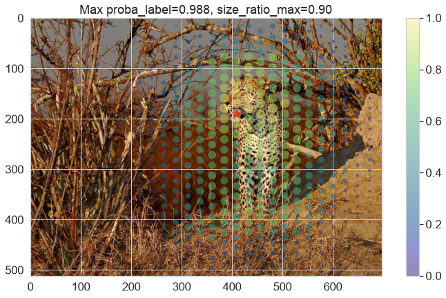
=-=-=-=-=-=-=-=-=-=-=-=-=-=-=-=-=-=-=-=-=-=-=-=-=-=-=-=-=-=-=-=-=-=-=-=-=-=-=-=-=-=-=-=-=-=-=-=-=-=-
[do_fovea=False] image_url='leopard.jpg' contains a leopard?
.-.-.-.-.-.-.-.-.-.-.-.-.-.-.-.-.-.-.-.-.-.-.-.-.-.-.-.-.-.-.-.-.-.-.-.-.-.-.-.-.-.-.-.-.-.-.-.-.-.-
Clipping input data to the valid range for imshow with RGB data ([0..1] for floats or [0..255] for integers). Got range [0.0..1.0000001].
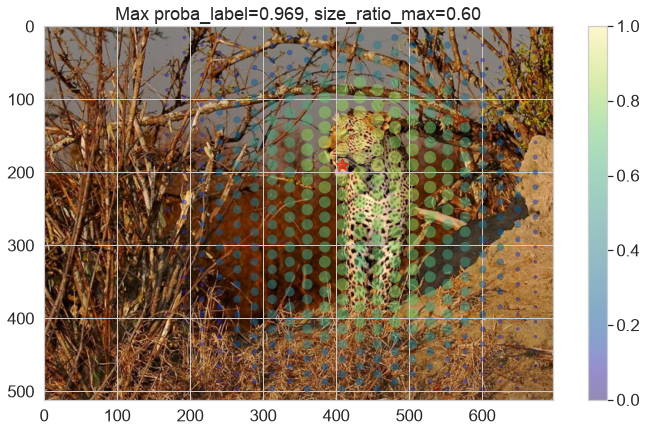
type(full_image) = <class 'torch.Tensor'>, full_image.dtype = torch.float32, full_image.shape = torch.Size([3, 375, 500])
=-=-=-=-=-=-=-=-=-=-=-=-=-=-=-=-=-=-=-=-=-=-=-=-=-=-=-=-=-=-=-=-=-=-=-=-=-=-=-=-=-=-=-=-=-=-=-=-=-=-
[do_fovea=True] image_url='frog.jpg' contains a tree_frog?
.-.-.-.-.-.-.-.-.-.-.-.-.-.-.-.-.-.-.-.-.-.-.-.-.-.-.-.-.-.-.-.-.-.-.-.-.-.-.-.-.-.-.-.-.-.-.-.-.-.-
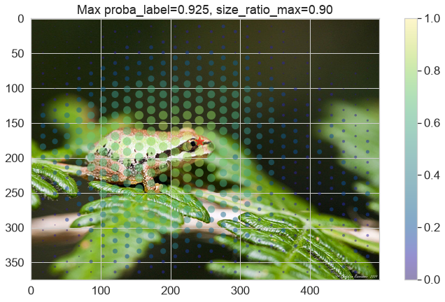
=-=-=-=-=-=-=-=-=-=-=-=-=-=-=-=-=-=-=-=-=-=-=-=-=-=-=-=-=-=-=-=-=-=-=-=-=-=-=-=-=-=-=-=-=-=-=-=-=-=-
[do_fovea=False] image_url='frog.jpg' contains a tree_frog?
.-.-.-.-.-.-.-.-.-.-.-.-.-.-.-.-.-.-.-.-.-.-.-.-.-.-.-.-.-.-.-.-.-.-.-.-.-.-.-.-.-.-.-.-.-.-.-.-.-.-
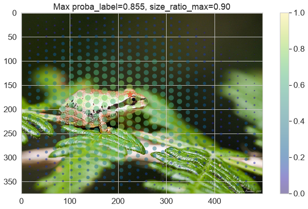
type(full_image) = <class 'torch.Tensor'>, full_image.dtype = torch.float32, full_image.shape = torch.Size([3, 512, 802])
=-=-=-=-=-=-=-=-=-=-=-=-=-=-=-=-=-=-=-=-=-=-=-=-=-=-=-=-=-=-=-=-=-=-=-=-=-=-=-=-=-=-=-=-=-=-=-=-=-=-
[do_fovea=True] image_url='Hidden_leopard.png' contains a leopard?
.-.-.-.-.-.-.-.-.-.-.-.-.-.-.-.-.-.-.-.-.-.-.-.-.-.-.-.-.-.-.-.-.-.-.-.-.-.-.-.-.-.-.-.-.-.-.-.-.-.-
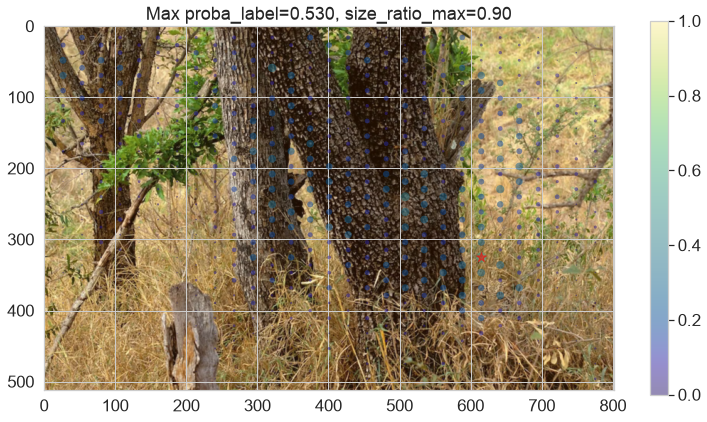
=-=-=-=-=-=-=-=-=-=-=-=-=-=-=-=-=-=-=-=-=-=-=-=-=-=-=-=-=-=-=-=-=-=-=-=-=-=-=-=-=-=-=-=-=-=-=-=-=-=-
[do_fovea=False] image_url='Hidden_leopard.png' contains a leopard?
.-.-.-.-.-.-.-.-.-.-.-.-.-.-.-.-.-.-.-.-.-.-.-.-.-.-.-.-.-.-.-.-.-.-.-.-.-.-.-.-.-.-.-.-.-.-.-.-.-.-
type(full_image) = <class 'torch.Tensor'>, full_image.dtype = torch.float32, full_image.shape = torch.Size([3, 512, 768])
=-=-=-=-=-=-=-=-=-=-=-=-=-=-=-=-=-=-=-=-=-=-=-=-=-=-=-=-=-=-=-=-=-=-=-=-=-=-=-=-=-=-=-=-=-=-=-=-=-=-
[do_fovea=True] image_url='Hidden_tiger.png' contains a tiger?
.-.-.-.-.-.-.-.-.-.-.-.-.-.-.-.-.-.-.-.-.-.-.-.-.-.-.-.-.-.-.-.-.-.-.-.-.-.-.-.-.-.-.-.-.-.-.-.-.-.-
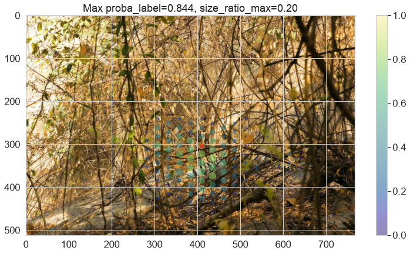
=-=-=-=-=-=-=-=-=-=-=-=-=-=-=-=-=-=-=-=-=-=-=-=-=-=-=-=-=-=-=-=-=-=-=-=-=-=-=-=-=-=-=-=-=-=-=-=-=-=-
[do_fovea=False] image_url='Hidden_tiger.png' contains a tiger?
.-.-.-.-.-.-.-.-.-.-.-.-.-.-.-.-.-.-.-.-.-.-.-.-.-.-.-.-.-.-.-.-.-.-.-.-.-.-.-.-.-.-.-.-.-.-.-.-.-.-
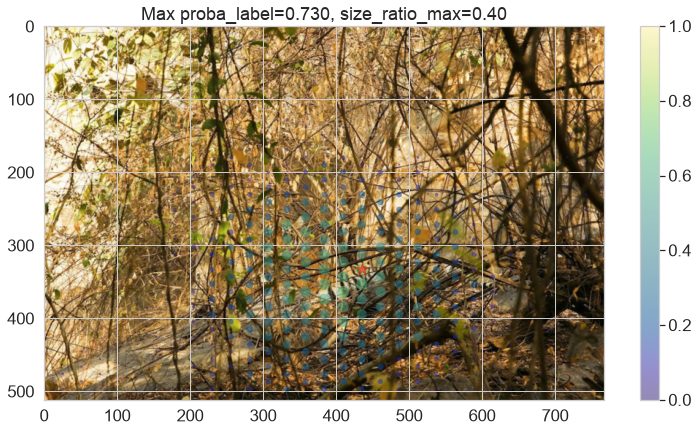
type(full_image) = <class 'torch.Tensor'>, full_image.dtype = torch.float32, full_image.shape = torch.Size([3, 512, 769])
=-=-=-=-=-=-=-=-=-=-=-=-=-=-=-=-=-=-=-=-=-=-=-=-=-=-=-=-=-=-=-=-=-=-=-=-=-=-=-=-=-=-=-=-=-=-=-=-=-=-
[do_fovea=True] image_url='Hidden_owl.png' contains a great_grey_owl?
.-.-.-.-.-.-.-.-.-.-.-.-.-.-.-.-.-.-.-.-.-.-.-.-.-.-.-.-.-.-.-.-.-.-.-.-.-.-.-.-.-.-.-.-.-.-.-.-.-.-
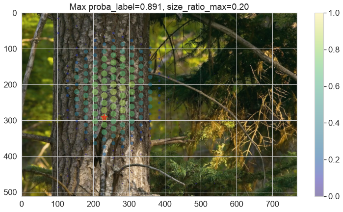
=-=-=-=-=-=-=-=-=-=-=-=-=-=-=-=-=-=-=-=-=-=-=-=-=-=-=-=-=-=-=-=-=-=-=-=-=-=-=-=-=-=-=-=-=-=-=-=-=-=-
[do_fovea=False] image_url='Hidden_owl.png' contains a great_grey_owl?
.-.-.-.-.-.-.-.-.-.-.-.-.-.-.-.-.-.-.-.-.-.-.-.-.-.-.-.-.-.-.-.-.-.-.-.-.-.-.-.-.-.-.-.-.-.-.-.-.-.-
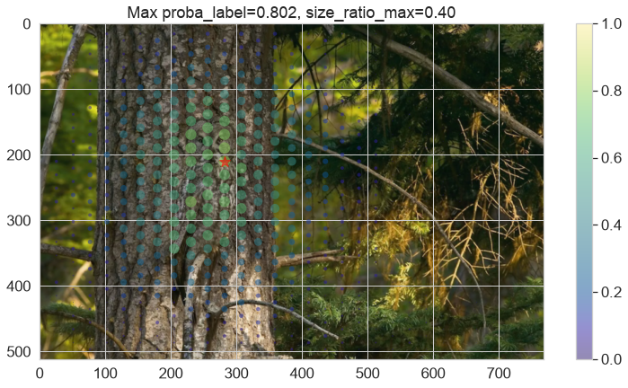
[10]:
n_batch = 50
n_batch = 5
do_square = False
do_square = True
cos_30 = fovea.np.cos(fovea.np.pi/6)
# print(cos_30)
# if do_square:
resolution_HW = (int(sqrt(N_fixations*cos_30)), int(sqrt(N_fixations/cos_30)))
print(f"{resolution_HW=}, {cos_30=:.3f}, {resolution_HW[1]/resolution_HW[0]=:.3f}")
resolution_HW=(24, 28), cos_30=0.866, resolution_HW[1]/resolution_HW[0]=1.167
[11]:
do_square
[11]:
True
[12]:
for dataset in fovea.params.all_datasets:
print(50*'=')
print(f'{dataset=}')
print(50*'=')
args = fovea.Params(do_fovea=True, batch_size=1)
VAL_DATA_DIR = args.DATAROOT / f'Imagenet_{dataset}' / 'val'
val_dataset = fovea.get_dataset(args, VAL_DATA_DIR, do_full_preprocess=False)
val_loader = fovea.get_loader(args, val_dataset)
for i_batch, (image, true_idx) in fovea.tqdm(enumerate(val_loader), total=n_batch):
if i_batch >= n_batch:
break
print(50*'=-')
print(f'image contains a {true_idx.item()} = {val_loader.dataset.idx2label[true_idx]}')
print(50*'.-')
image = image.squeeze(0).to(args.device)
# true_idx = true_idx.to(args.device)
if do_square:
image = fovea.squarify(image)
three, H, W = image.shape
assert H == W, f"aspect ratio should be one but {H=} and {W=} "
assert three == 3
if max((H, W)) > image_size_full:
image = resize(image, image_size_full,
interpolation=InterpolationMode.BILINEAR, antialias=True)
three, H, W = image.shape
pos_H, pos_W = fovea.get_positions(H, W, resolution=resolution_HW, do_hex=True)
proba_label, proba_label_max = None, 0.
size_ratio_max = size_ratios[0]
for size_ratio in size_ratios:
for angle in angles:
probas = fovea.compute_likelihood_map(args, models[do_fovea], image, pos_H, pos_W,
size_ratio=size_ratio, angle=angle, do_softmax=do_softmax)
probas = probas.cpu()
proba_label_ = probas[:, true_idx.item()]
if proba_label_.max() > proba_label_max:
proba_label_max = proba_label_.max()
size_ratio_max = size_ratio
if proba_label is None:
proba_label = proba_label_
else:
if do_sum:
proba_label += proba_label_
else:
proba_label = torch.maximum(proba_label, proba_label_)
if do_sum: proba_label = proba_label / len(size_ratios) / len(angles)
idx_max = proba_label.argmax()
fig, ax = fovea.plt.subplots()
image_np = torch.movedim(image, (1, 2, 0), (0, 1, 2)).cpu().numpy()
ax.imshow(image_np)
scatter = ax.scatter(pos_W, pos_H, s=proba_label*s_max, c=proba_label, alpha=alpha, edgecolors='none', cmap=cmap, vmin=0, vmax=1)#vmax=proba_label.max())
ax.set_title(f'{true_idx.item()} = {val_loader.dataset.idx2label[true_idx]} / proba_label={max(proba_label).item():.3f}, size_ratio_max={size_ratio_max:.2f}')
ax.scatter(pos_W[idx_max], pos_H[idx_max], s=proba_label[idx_max]*s_max, marker='*', c='red', alpha=alpha)
fig.colorbar(scatter, ax=ax) # Add colorbar
fig.set_facecolor(color='white')
fovea.plt.show()
=-=-=-=-=-=-=-=-=-=-=-=-=-=-=-=-=-=-=-=-=-=-=-=-=-=-=-=-=-=-=-=-=-=-=-=-=-=-=-=-=-=-=-=-=-=-=-=-=-=-
image contains a 663 = monastery
.-.-.-.-.-.-.-.-.-.-.-.-.-.-.-.-.-.-.-.-.-.-.-.-.-.-.-.-.-.-.-.-.-.-.-.-.-.-.-.-.-.-.-.-.-.-.-.-.-.-
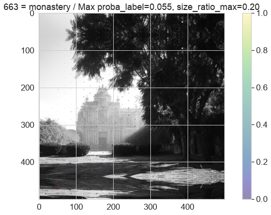
=-=-=-=-=-=-=-=-=-=-=-=-=-=-=-=-=-=-=-=-=-=-=-=-=-=-=-=-=-=-=-=-=-=-=-=-=-=-=-=-=-=-=-=-=-=-=-=-=-=-
image contains a 380 = titi
.-.-.-.-.-.-.-.-.-.-.-.-.-.-.-.-.-.-.-.-.-.-.-.-.-.-.-.-.-.-.-.-.-.-.-.-.-.-.-.-.-.-.-.-.-.-.-.-.-.-
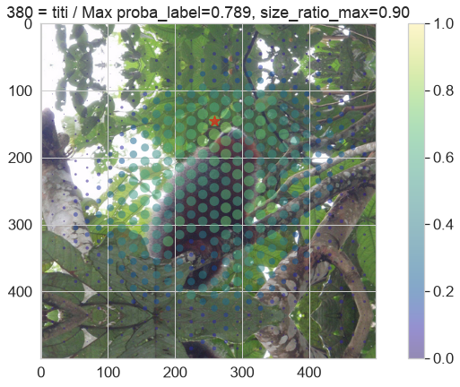
=-=-=-=-=-=-=-=-=-=-=-=-=-=-=-=-=-=-=-=-=-=-=-=-=-=-=-=-=-=-=-=-=-=-=-=-=-=-=-=-=-=-=-=-=-=-=-=-=-=-
image contains a 940 = spaghetti_squash
.-.-.-.-.-.-.-.-.-.-.-.-.-.-.-.-.-.-.-.-.-.-.-.-.-.-.-.-.-.-.-.-.-.-.-.-.-.-.-.-.-.-.-.-.-.-.-.-.-.-
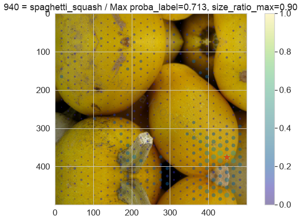
=-=-=-=-=-=-=-=-=-=-=-=-=-=-=-=-=-=-=-=-=-=-=-=-=-=-=-=-=-=-=-=-=-=-=-=-=-=-=-=-=-=-=-=-=-=-=-=-=-=-
image contains a 811 = space_heater
.-.-.-.-.-.-.-.-.-.-.-.-.-.-.-.-.-.-.-.-.-.-.-.-.-.-.-.-.-.-.-.-.-.-.-.-.-.-.-.-.-.-.-.-.-.-.-.-.-.-
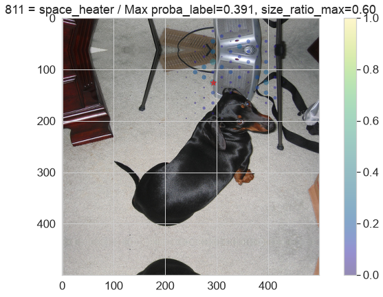
=-=-=-=-=-=-=-=-=-=-=-=-=-=-=-=-=-=-=-=-=-=-=-=-=-=-=-=-=-=-=-=-=-=-=-=-=-=-=-=-=-=-=-=-=-=-=-=-=-=-
image contains a 923 = plate
.-.-.-.-.-.-.-.-.-.-.-.-.-.-.-.-.-.-.-.-.-.-.-.-.-.-.-.-.-.-.-.-.-.-.-.-.-.-.-.-.-.-.-.-.-.-.-.-.-.-
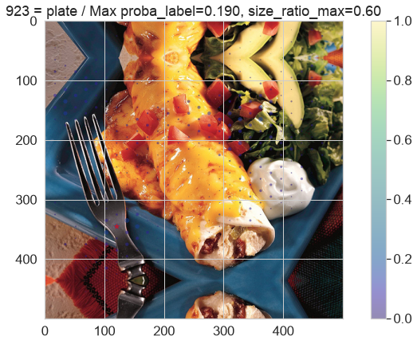
=-=-=-=-=-=-=-=-=-=-=-=-=-=-=-=-=-=-=-=-=-=-=-=-=-=-=-=-=-=-=-=-=-=-=-=-=-=-=-=-=-=-=-=-=-=-=-=-=-=-
image contains a 988 = acorn
.-.-.-.-.-.-.-.-.-.-.-.-.-.-.-.-.-.-.-.-.-.-.-.-.-.-.-.-.-.-.-.-.-.-.-.-.-.-.-.-.-.-.-.-.-.-.-.-.-.-
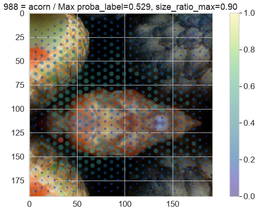
=-=-=-=-=-=-=-=-=-=-=-=-=-=-=-=-=-=-=-=-=-=-=-=-=-=-=-=-=-=-=-=-=-=-=-=-=-=-=-=-=-=-=-=-=-=-=-=-=-=-
image contains a 909 = wok
.-.-.-.-.-.-.-.-.-.-.-.-.-.-.-.-.-.-.-.-.-.-.-.-.-.-.-.-.-.-.-.-.-.-.-.-.-.-.-.-.-.-.-.-.-.-.-.-.-.-
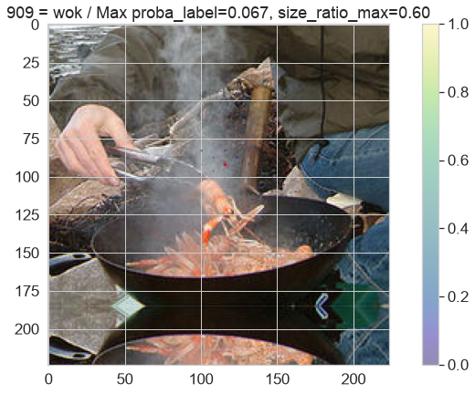
=-=-=-=-=-=-=-=-=-=-=-=-=-=-=-=-=-=-=-=-=-=-=-=-=-=-=-=-=-=-=-=-=-=-=-=-=-=-=-=-=-=-=-=-=-=-=-=-=-=-
image contains a 29 = axolotl
.-.-.-.-.-.-.-.-.-.-.-.-.-.-.-.-.-.-.-.-.-.-.-.-.-.-.-.-.-.-.-.-.-.-.-.-.-.-.-.-.-.-.-.-.-.-.-.-.-.-
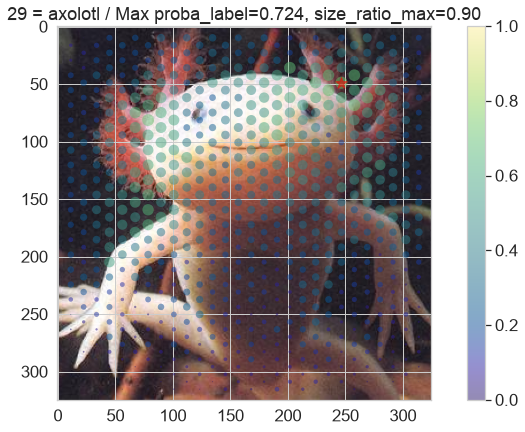
=-=-=-=-=-=-=-=-=-=-=-=-=-=-=-=-=-=-=-=-=-=-=-=-=-=-=-=-=-=-=-=-=-=-=-=-=-=-=-=-=-=-=-=-=-=-=-=-=-=-
image contains a 222 = kuvasz
.-.-.-.-.-.-.-.-.-.-.-.-.-.-.-.-.-.-.-.-.-.-.-.-.-.-.-.-.-.-.-.-.-.-.-.-.-.-.-.-.-.-.-.-.-.-.-.-.-.-
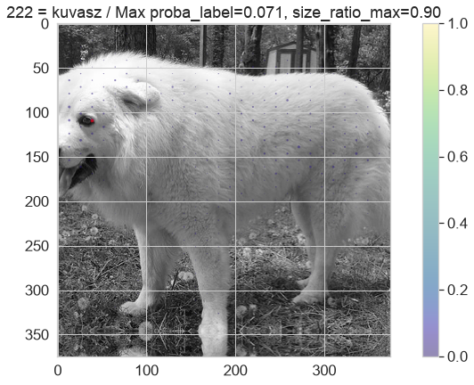
=-=-=-=-=-=-=-=-=-=-=-=-=-=-=-=-=-=-=-=-=-=-=-=-=-=-=-=-=-=-=-=-=-=-=-=-=-=-=-=-=-=-=-=-=-=-=-=-=-=-
image contains a 343 = warthog
.-.-.-.-.-.-.-.-.-.-.-.-.-.-.-.-.-.-.-.-.-.-.-.-.-.-.-.-.-.-.-.-.-.-.-.-.-.-.-.-.-.-.-.-.-.-.-.-.-.-
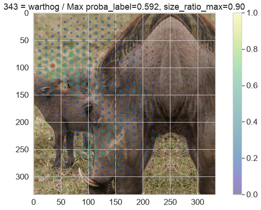
[13]:
fig, ax = fovea.plt.subplots()
ax.imshow(image_np)
# ax.set_xticks([])
ax.scatter(pos_W.ravel(), pos_H.ravel(), s=s_max, alpha=alpha)
# ax.set_yticks([])
fig.set_facecolor(color='white')
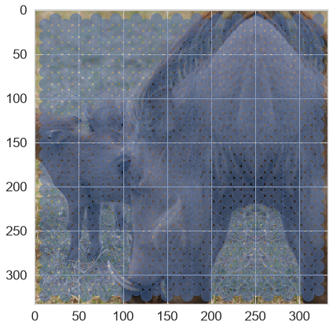
[14]:
image.squeeze(0).shape
[14]:
torch.Size([3, 500, 500])
[15]:
fovea.squarify(image.squeeze(0))
[15]:
tensor([[[0.282, 0.282, 0.294, ..., 0.212, 0.216, 0.188],
[0.298, 0.282, 0.263, ..., 0.224, 0.224, 0.208],
[0.294, 0.298, 0.286, ..., 0.212, 0.224, 0.227],
...,
[0.314, 0.227, 0.165, ..., 0.184, 0.165, 0.169],
[0.278, 0.184, 0.165, ..., 0.153, 0.196, 0.173],
[0.306, 0.180, 0.133, ..., 0.184, 0.200, 0.196]],
[[0.247, 0.247, 0.259, ..., 0.184, 0.188, 0.161],
[0.263, 0.247, 0.227, ..., 0.196, 0.196, 0.180],
[0.259, 0.263, 0.251, ..., 0.184, 0.196, 0.200],
...,
[0.271, 0.200, 0.137, ..., 0.157, 0.137, 0.141],
[0.235, 0.157, 0.137, ..., 0.125, 0.169, 0.145],
[0.263, 0.153, 0.106, ..., 0.157, 0.173, 0.169]],
[[0.220, 0.220, 0.231, ..., 0.153, 0.157, 0.129],
[0.235, 0.220, 0.200, ..., 0.165, 0.165, 0.149],
[0.231, 0.235, 0.224, ..., 0.161, 0.173, 0.169],
...,
[0.247, 0.176, 0.114, ..., 0.133, 0.114, 0.118],
[0.212, 0.133, 0.114, ..., 0.102, 0.145, 0.122],
[0.239, 0.129, 0.082, ..., 0.133, 0.149, 0.145]]])
[16]:
image = fovea.squarify(image.squeeze(0))
three, H, W = image.shape
pos_H, pos_W = fovea.get_positions(H, W, resolution=resolution_HW, do_hex=True)
# print(f'{pos_H = }, {pos_W = }')
fig, ax = fovea.plt.subplots()
ax.scatter(pos_W, pos_H, s=fovea.np.ones_like(pos_W)*s_max, c='blue', alpha=1)
ax.axis('square')
[16]:
(np.float64(-6.034482758620694),
np.float64(510.9655172413793),
np.float64(-8.5),
np.float64(508.5))
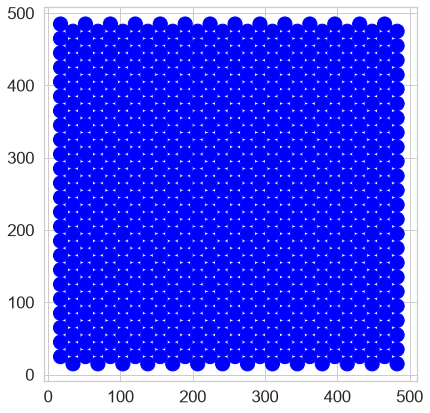
[17]:
image_np.shape
[17]:
(333, 333, 3)
[18]:
# fig, ax = plot_map(size_ratios=np.linspace(0.1, 0.6, 5), angles=angles)
Voilà !